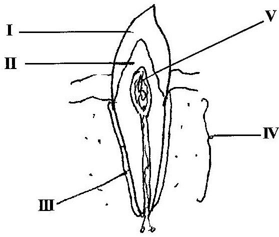

2017 BECE Science Past Questions – Paper Two

(i) Name each of the parts labelled I, II, III, IV and V.
(ii) What is the function of each of the parts labelled I and III?
(iii) Which of the labelled parts could be affected by tooth decay?
(iv) State three ways by which tooth decay may be prevented.
(b) The diagram below is an illustration of a scientific phenomenon which occurs in nature. Study the diagram carefully and answer the questions that follow.
(i) What phenomenon does the diagram illustrate?
(ii) Identify each of the parts labelled I, II, III, IV and V.
(iii) Explain why an object at the bottom of a pond appears closer to the surface than it actually is.
(c) The diagram below is an illustration of an experiment performed to separate the components of muddy water.
Study the diagram carefully and answer the questions that follow.
(i) Name each of the parts labelled I, II and III.
(ii) State the function of the part labelled II.
(iii) Name the substance obtained as the filtrate.
(iv) State three physical properties of the filtrate.
(v) Name two other materials that could be used in place
of the part labelled II.
(d) The diagram below illustrates a farmland on a sloppy area.
Study the diagram carefully and answer the questions that follow.
(i) What process is likely to occur on the farmland when it rains heavily?
(ii) State two farming practices that can also lead to the process mentioned in (i).
(iii) List four farming practices that could be used to control the process mentioned in (i).
(iv) Mention three soil resources that would be depleted from the farmland when it rains heavily.
(a) An atom Y has atomic number 12. It loses two electrons in order to be stable.
(i) State the proton number of the atom before it loses electrons.
(ii) State the electron number of the atom:
(α) before it loses electrons.
(β) after losing electrons.
(iii) Name the type of ion formed by the atom when it loses two electrons.
(b) Name four farming systems used in crop production.
(c) (i) What is dispersal of seeds?
(ii) State two characteristics of seeds dispersed by wind.
(d) Explain the term forward bias of a p-n junction diode.
(a) (i) What is an acid?
(ii) Give two differences between an acid and a base, in terms
of taste and feel.
(b) (i) Define pressure.
(ii) A force of 200 N is exerted on an area of 50m2.
Calculate the pressure exerted by the force.
(c) Explain the following terms as associated with living organisms:
(i) unicellular
(ii) multicellular.
(d) Give two reasons why soil air is important.
(a) (i) Explain the following terms as applied to machines:
(α) work input
(β) work output.
(ii) State one factor that limits work output for a given work input in a simple machine.
(b) (i) What is chloroplast?
(ii) Differentiate between aerobic respiration and anaerobic respiration.
(c) (i) State the colour change that would occur when blue litmus paper is dipped into a solution of:
(α) vinegar
(β) wood ash.
(ii) Name the products formed when hydrochloric acid reacts with sodium hydroxide.
(d) List two benefits of vegetables to humans.
(a) (i) Differentiate between egestion and digestion in nutrition.
(ii) What is the end-product of digestion?
(b) Give one example of a chemical compound used in:
(i) medicine
(ii) agriculture
(iii) industry
(c) (i) Define the term soil profile.
(ii) State two ways in which soil profile is important in crop production.
(d) (i) State two steps used by scientists in doing their work.
(ii) Give two subjects that may be considered as applied sciences.
(a) (i) What is an alloy?
(ii) State two causes of corrosion of metals.
(b) (i) What is a planet?
(ii) Name two planets between the Sun and the Earth.
(c) State four functions of the circulatory system in humans.
(d) (i) Define the term crop rotation.
(ii) Give one example of a chemical method of controlling pests on crop farms.